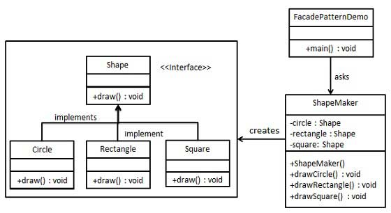

Facade pattern hides the complexities of the system and provides an interface to the client using which the client can access the system. This type of design pattern comes under structural pattern as this pattern adds an interface to existing system to hide its complexities.
This pattern involves a single class which provides simplified methods required by client and delegates calls to methods of existing system classes.
We are going to create a Shape interface and concrete classes implementing the Shape interface. A facade class ShapeMaker is defined as a next step.
ShapeMaker class uses the concrete classes to delegate user calls to these classes. FacadePatternDemo, our demo class, will use ShapeMaker class to show the results.
